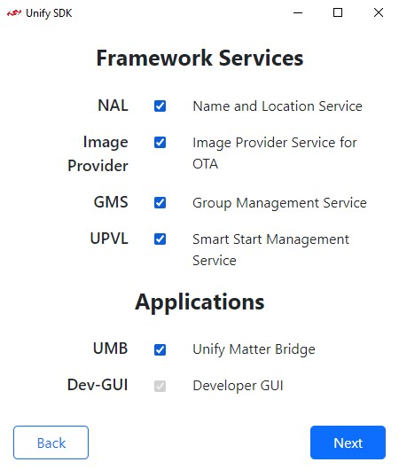

Portable runtime GUI
Unify Portable Runtime Environment
Disclaimer: Currently the Unify Portable Runtime environment does not supports the following protocol:
Bluetooth in Multiprotocol
Thread in Multiprotocol
Matter
Prerequisites:
Docker version > 20.10.12 installed.
docker-compose version > 2.5.1
x86-64/amd64 CPU architecture.
The Unify Portable Runtime Environment strives to get Unify running as fast as possible on your desktop. The portable runtime comes as a binary executable GUI, together with Unify Debian packages, a docker-compose file and a tool which can map a Silicon Labs device into a Linux docker environment on Windows and Linux.
Start docker service
Refer to Docker Service Pre-requisite.
Quick start
Note: If you are running Linux, you need the right permissions to run the Commander and Silink tools.
For handling these permissions, you either need to:
copy the Udev rules from
./resources/commander/99-jlink.rulesto the system folder/etc/udev/rules.d/and runsudo udevadm control --reload && sudo udevadm trigger.or
run all the commands as root with eg.
sudo ./unify_portable_gui.....
WARNING: If you start up the portable docker environment on a host already running Unify Framework applications, this will cause unexpected behavior.
Setting up the portable runtime environment should be as easy as downloading
portable_runtime_gui_<OS>.<zip/tar.bz2> file from the
Unify’s GitHub release page
and extracting it.
Launching Portable Runtime GUI
After extraction, make sure you have modules connected to your desktop and run the binary unify_portable_gui.
This should launch up the Unify Portable Runtime GUI.
Note: The configuration pages have Back button to go to previous page and edit configurations made.
Protocol Selection
After initial pre-requisites check, the GUI will render protocol selection page.
{kind=link}
By default only EED (Emulated End Device) is selected.
click on Next.
Emulated End Device (Experimental):
Portable runtime supports end device emulation as an experimental feature. The Emulated End Device(EED) is experimental emulation of end device to enable UMB demo without any actual Z-Wave devices.
Note: For UMB to process EED with only one cluster as a valid device enable atleast select NAL in the framework service page that follows.
The EED can be enable in protocol selection page of latest portable runtime GUI.
Framework Services and Application Selection
{kind=link}
Select the framework services and the unify matter bridge application as needed and click Next.
Note: Dev-GUI Application will be enabled by default.
Configuration
Select the Device for each protocol selected in Protocol Selection page. If Z-Wave was selected then also configure RF Region.
If EED was selected then select prefered Device Type from the dropdown.
Select AllClustersDevice for all possible device types supported by EED.
{kind=link}
If the required device is not yet connected, connect the device to the host and click Discover Device for it to show up in the drop-down list.
If you wish manual input serial number or have connected the device remotely over ethernet and wish to input its IP address, tick the manual check box and type in the serial-no or IP address of the device.
After setting up configurations, click Next.
Review Configuration:
{kind=link}
This page is for users to review the selections and configurations that has been setup so far, if configuration looks good click Run else click Back to redo configuration setup.
Note: Currently the Conflicts do not indicate much, it is intended for future use.
Running Status
Once Run is clicked on Review Configuration page, the selected protocol controllers and framework services bring-up within portable runtime environment starts. On successful bring up, the Status page is displayed which periodically renders the running status of each service.
{kind=link}
Error
In case of any issues in bring-up or pre-requisites check, error page is displayed with relevant message.

Troubleshooting
In case you want to use different version of UnifySDK or UMB, replace desired packages in portable_runtime_
In case you run into any issues, a log file is produced in the base directory, called portable_runtime.log.